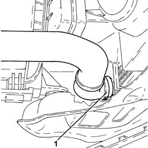
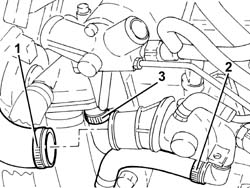
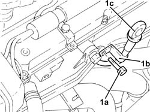
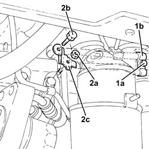
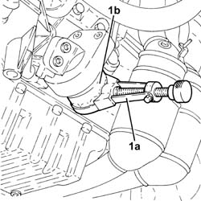
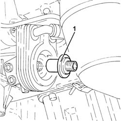
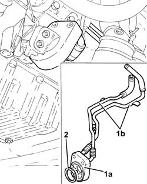
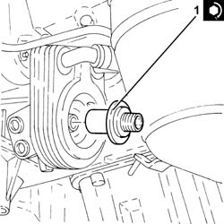
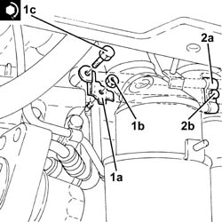

1084C12 SCAMBIATORE DI CALORE OLIO MOTORE COMPLETO DEI TUBI DI ENTRATA E USCITA LIQUIDO DI RAFFREDDAMENTO - S.R.
- Path
- Procedures > 10 ENGINE UNIT > 1084 ENGINE LUBRICATION SYSTEM > 1084C ENGINE OIL COOLING CIRCUIT > 1084C12 SCAMBIATORE DI CALORE OLIO MOTORE COMPLETO DEI TUBI DI ENTRATA E USCITA LIQUIDO DI RAFFREDDAMENTO - S.R.
- Kind
- repair procedure (removal / refitting; the operation number is the code)
- Applies to
- engines: 2.0 JTS; all production periods
- Interactive page
- https://sloeber94.github.io/elrnDB-aGt/en/#/125001166
Applies to: engines: 2.0 JTS; all production periods
 Removing
Removing
 Refitting
RefittingPosition the vehicle on the ramp
Ensure that the ignition key is in the OFF position, then disconnect the negative battery terminal (-).
Name | Connector | |
|---|---|---|
- | Battery | See A1B BATTERY ( BATTERY NEGATIVE ) |
Proceed with removal
Op. 1016A40 IGNITION COIL COVER ON CYLINDER HEAD- R+R
Proceed with removal
Proceed with removal
Op. 7055B54 UNDER-ENGINE GUARD - R R
Proceed with removal
1. Disconnect the lower coolant outlet hose from the radiator and drain the engine coolant.
Op. 1076A48 CATALYTIC CONVERTER HEAT SHIELD - R R
Op. 1048A59 PIPE from flow meter to throttle casing hose - R.R.

Applies to: engines: 2.0 JTS; all production periods
1. Loosen band and disconnect the upper coolant inlet hose to the radiator, thermostat side.
2. Loosen the band and disconnect the engine oil heat exchanger flexible coolant supply pipe, rigid pipe side.
3. Loosen the band and disconnect the connector for the coolant outlet pipe from the engine oil heat exchanger on the water pump rigid inlet pipe side.

Applies to: engines: 2.0 JTS; all production periods
1. Undo the bolt (1a), then withdraw and remove the guide tube (1b) complete with engine oil dipstick (1c).

Applies to: engines: 2.0 JTS; all production periods
1. Undo the bolt (1a) and remove the top bracket securing the rigid coolant supply and return pipes to the engine oil heat exchanger, engine block side.
2. Undo the nut (2a), bolt (2b) and remove the lower bracket (2c) securing the rigid coolant supply and return pipes to the engine oil heat exchanger, engine block side.

Applies to: engines: 2.0 JTS; all production periods
1. Using a suitable tool (1a), undo and remove the engine oil filter cartridge (1b).

Applies to: engines: 2.0 JTS; all production periods
1. Undo the connector securing the engine oil heat exchanger to the crankshaft oil seal front cover.

Applies to: engines: 2.0 JTS; all production periods
1. Remove the engine oil heat exchanger (1a) complete with coolant supply and return pipes to the engine oil heat exchanger (1b), and if necessary separate them at the bench.
2. Remove the engine oil heat exchanger gasket.

Applies to: engines: 2.0 JTS; all production periods
Refitting
RemovingRefit in its seating the engine oil heat exchanger gasket.
Refit in its seating the engine oil heat exchanger complete with coolant supply and return pipes to the engine oil heat exchanger.
1. Tighten the connector securing the engine oil heat exchanger to the crankshaft oil seal front cover to the specified torque.
 | Fastening | Component | Ø | Value (daNm) |
|---|---|---|---|---|
1 | Connector | ENGINE OIL HEAT EXCHANGER | M20 | (Crankcase front cover side) 5.5 ÷ 6.0 |

Applies to: engines: 2.0 JTS; all production periods
Lubricate the gasket with engine oil and fit the engine oil filter, tightening fully by hand.
1. Refit in its seating the lower bracket (1a) securing the rigid coolant supply and return pipes to the engine oil heat exchanger, engine block side, and secure it with the nut (1b) and bolt (1c) to the specified torque.
| Fastening | Component | Ø | Value (daNm) |
|---|---|---|---|---|
1c | Bolt | COMPRESSOR MOUNT (AC) | M10 | (Crankcase side) 4.5 ÷ 5.5 |
2. Refit in its seating the top bracket (2a) securing the rigid coolant supply and return pipes to the engine il heat exchanger, engine block side, and secure it with the relevant bolt (2b).

Applies to: engines: 2.0 JTS; all production periods
Place the guide and engine oil dipstick assembly back in its housing and fix it using the bolt.
Connect the coolant outlet pipe from the engine oil heat exchanger to the water pump rigid inlet pipe and tighten the band.
Connect the coolant supply pipe to the engine oil heat exchanger, thermostat side, and tighten the band.
Connect the upper coolant inlet hose to the radiator, thermostat side, and tighten the band.
Connect the rapid attachment for the bottom coolant outlet hose from the radiator.
Proceed with refitting
Op. 1048A59 PIPE from flow meter to throttle casing hose - R.R..
Proceed with refitting
Op. 1076A48 CATALYTIC CONVERTER HEAT SHIELD - R R.
Proceed with refitting
Op. 7055B54 UNDER-ENGINE GUARD - R R.
Proceed with refitting
Op. 1016A40 IGNITION COIL COVER ON CYLINDER HEAD- R+R.
Connect the negative (-) battery terminal
Top up the engine oil lubrication system
Op. 0010T11 ENGINE OIL CHECK LEVEL AND TOP UP.
Refill the engine cooling system with coolant
Op. 0010T20 COOLANT CHECK DENSITY AND TOP UP IF NECESSARY.
Remove the car from the ramps.
Topics linked from this page (6)
- 0010T11 ENGINE OIL CHECK LEVEL AND TOP UP
- 0010T20 COOLANT CHECK DENSITY AND TOP UP IF NECESSARY
- 1016A40 IGNITION COIL COVER ON CYLINDER HEAD- R+R
- 1048A59 PIPE from flow meter to throttle casing hose - R.R.
- 1076A48 CATALYTIC CONVERTER HEAT SHIELD - R R
- 7055B54 UNDER-ENGINE GUARD - R R